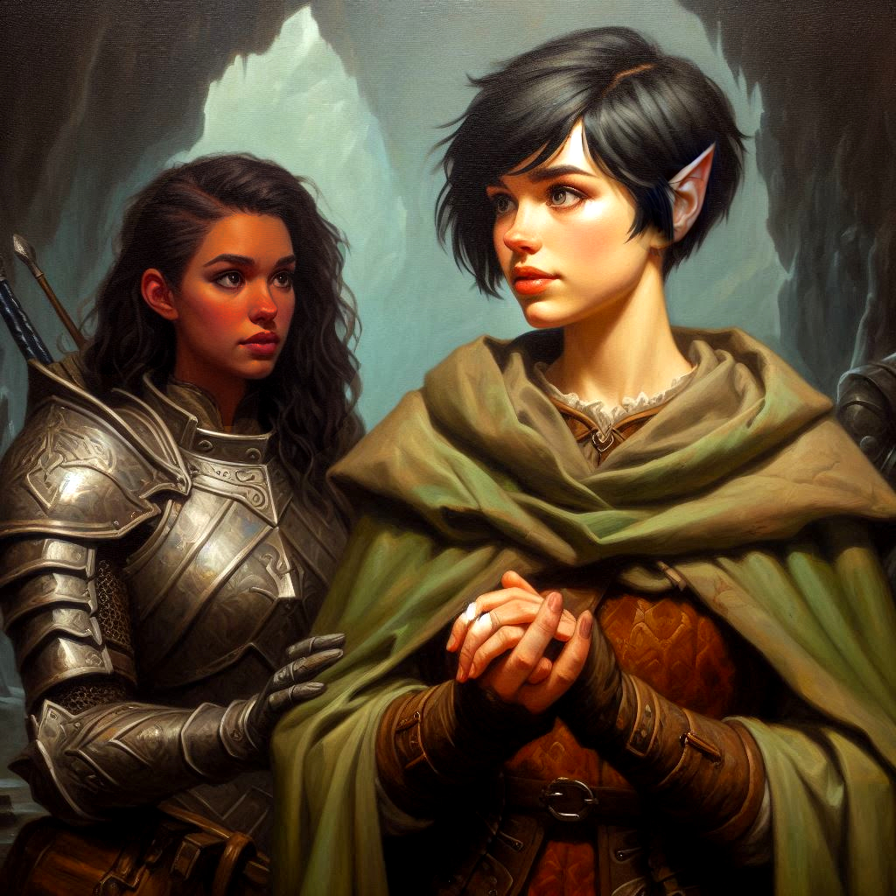
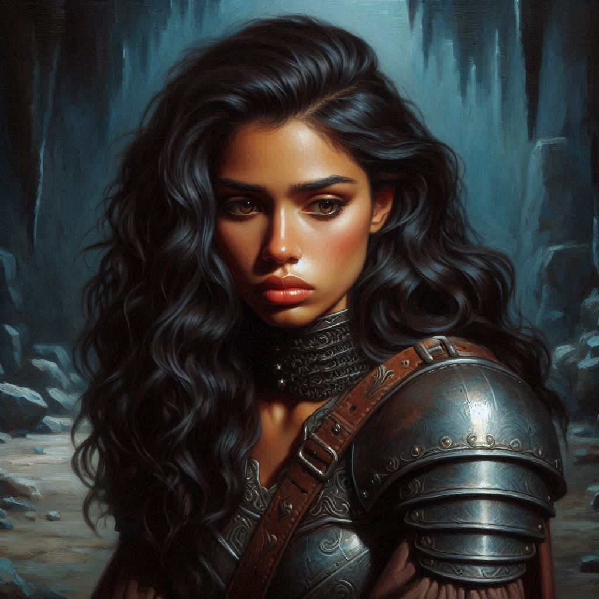
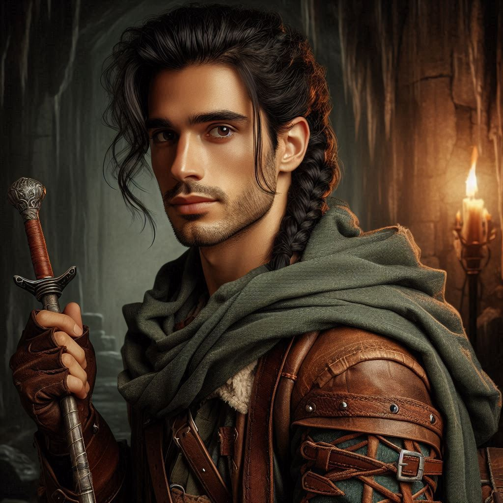

The Dark Night of the Soul
You watch as Jorsh disappears into the shadows, his footsteps fading into the depths of the cavern. The sound of the roaring waterfall seems distant now, replaced by the echo of your heartbeat pounding in your ears. You should have stopped him. You could have. But you hesitated.
Your hand falls from your sword hilt, your fingers trembling. Every step you’ve taken since leaving Belladonna Township has led you here, and yet now, standing alone in the cold and empty chamber, you feel lost. The weight of your mission presses down on you, heavier than ever before. You were sent to bring Jorsh to justice, but all you’ve found is doubt—doubt in yourself, in your abilities, and in your heart.
The memories of your childhood with Jorsh swirl in your mind, mingling with the bitter reality of what he’s become. He was more than just a rogue sorcerer. He was your friend, your first love. Now, he’s an enemy—yet part of you still wants to save him. The part that remembers running through the fields together, laughing like you had the whole world in front of you.
But that world is gone, and the one you stand in now is darker than you ever imagined.
You emerge from the cavern back into the open air and the dark forest surrounding Hemlock Falls. You duck behind one of the enormous elvish monuments flanking the entrance to the cave. “Hawthorn,” you whisper harshly, your eyes finding her silhouette crouched in the shadows. “We need to talk.”
She jerks around, pointing her sword at you. “Oh, Kira! It’s you! I wasn’t expecting you back so soon.”
“I ran into Jorsh. He’s already inside the cave.”
“He’s already here?” Hawthorn emotes. “Didyou stop him? Did he have anything unusual with him? Any magical artifacts?”
“I don’t know,” you admit. “He ambushed me and escaped.” You are intentionally vague about the details of your encounter, letting the princess think what she will. “He headed deeper into the cavern.”
“Did he say anything to you?” Hawthorn seems worried.
“He ranted something crazy. Clearly, he has been poisoned by dark magic,” you say, gauging the princess’s response carefully. “He hexed me before I could detain him. If you want to help me get him, we need to move quickly.”
Hawthorn’s expression softens, and she steps closer, her presence warm despite the cold air around you. “Jorsh is dangerous. You can’t blame yourself for not stopping him.”
You meet her gaze, feeling the tension in your chest tighten. “It’s more than that. This whole mission—it’s more complicated than I thought. There’s so much I didn’t know.”
She looks away for a moment, her jaw tightening. You see the conflict in her eyes, as if she’s battling some inner turmoil of her own. “I need to tell you something,” she says, her voice quiet but firm. “I haven’t been completely honest with you.”
A cold knot forms in your stomach. You knew there was more to this than she let on. “What is it?” you ask warily.
Hawthorn takes a deep breath, her hands clenched at her sides. “The treasure Jorsh is after—it’s not just about gold or power. It’s tied to something much larger. The Minister of Trade, the dark elves... they’re all connected to this. And I... I’ve been involved in this scheme for longer than I care to admit.”
You feel a wave of betrayal wash over you. “You’re working with the Minister of Trade?” Your voice rises in disbelief, anger flaring up inside you. “After everything, you’re just like them?”
“No!” Hawthorn steps forward, her eyes pleading. “It’s not like that. I was being blackmailed. The Minister of Trade—he’s using my family’s secrets against me, threatening to expose things that could destroy everything. I didn’t have a choice.”
Her desperation tugs at something inside you, but it’s hard to push down the bitterness. You’ve been manipulated, used as a pawn in a game you barely understand. “So what now?” you ask, your voice low and tired. “You want me to help you cover it up?”
Hawthorn’s expression softens, and for the first time, you see the fear behind her royal facade. “No,” she whispers. “I want to stop him. I want to end this before it’s too late.”
Before you can respond, the sound of hurried footsteps reaches your ears. You turn just as Elias bursts into the cavern, his eyes wild with concern. “Kira!” he calls, rushing to your side. “Are you all right?”
Relief washes over you at the sight of him, but it’s quickly overshadowed by the tension buzzing in the air between the three of you. Elias’ eyes dart to Hawthorn, and his expression darkens. “What’s she doing here?”
Hawthorn straightens, her regal demeanor slipping back into place. “I came to help,” she says coolly.
Elias scoffs, stepping between the two of you. “Help? Kira, I’ve been doing some investigating on my own. The royal family has been lying to us all along. They’re after the same dark power that the Minister of Trade is after. The same power that Jorsh the Betrayer is after.”
Your heart pounds in your chest as you’re caught in the middle of the brewing storm. The emotions swirling inside you—doubt, anger, betrayal—threaten to overwhelm you. You know Elias cares about you. His loyalty has never wavered, even when yours did. But there’s something about Hawthorn, something that draws you in despite everything.
“Elias, it’s not that simple,” you say quietly, trying to ease the tension. “She’s been caught up in this mess, too.”
He shakes his head, his jaw tight. “She’s dangerous, Kira. You can’t trust her.”
You glance at Hawthorn, her expression unreadable but her eyes filled with a flicker of something—maybe hope. Or regret. You’re not sure anymore.
“Need I remind both of you that I am the heir apparent of this kingdom? My intentions are to save the kingdom from dark forces,” Hawthorn says.
“Do you serve only the royal family of Hawthorn today? Or do you serve the kingdom your family is sworn to protect?” you ask.
“There’s no guarantee she won’t double-cross us,” Elias says. “Once we get to Jorsh, Princess Hawthorn’s goal is to take that power for herself. Not stop it.”
“You’re speculating,” Hawthorn says. “And you’re wrong about me. If you follow me, your Princess, I swear to you I will reward you with wealth and power beyond your wildest dreams. Help me stop Jorsh. Fight me or try to stop me, and you will be guilty of treason.”
“Serving only your family and leading the rest of the kingdom to ruin is treason,” Elias says hotly. “What proof can you offer that your intentions are righteous?”
Hawthorn sneers. “Ask your little girlfriend here what just happened. Ask her how she let Jorsh the Betrayer walk away when she had the chance to arrest him!”
Elias looks like he has been punched in the gut. “Kira? Is that true?”
Hawthorn offers a ring. “Join me. I will reward the Rangers of Belladonna richly if we succeed.”